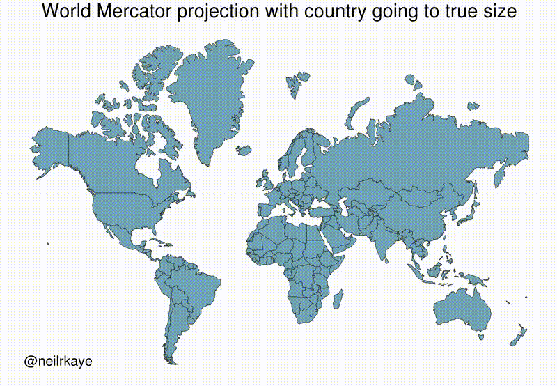

E3: Georeferencing and Modifying Features#
Warm Up#
You will find detailed guidance and general information about CRS (Coordinate Reference Systems) and map projections in another document associated with this exercise.
Here, we will take a step further to deepen your understanding.
Mathematical aspects of projections#
Why can’t the Earth (or an orange peel) be flattened without distortion?
This question is fundamentally about curvature. From a mathematical perspective, Gauss’s Theorema Egregium(thanks Gaussian again!) tells us that the intrinsic curvature of a surface is preserved under transformations that do not stretch or tear.
Since the Earth is (approximately) a sphere, and a sphere has positive curvature while a flat plane has zero curvature, you cannot map one onto the other without distortion.
For a fun and visual explanation, see: The clever way curvature is described in math, or There is a wonderful way of eating pizza, but you don’t know why
Reversibility:
Most common map projections are not perfectly reversible. Once a spherical surface is projected onto a plane, certain geometric properties are altered (e.g., distances, areas, or shapes).Example: A Mercator projection preserves angles but heavily distorts area; reversing it requires knowing the original CRS and applying a non-linear transformation.
Security considerations:
In some sensitive applications, datasets may use intentionally unusual or undocumented projections to hinder reverse engineering or prevent accurate coordinate transformation — a kind of cartographic encryption. This is common in many applications you use every day, such as Google Maps or Apple Maps, especially when you use the API.
Projections#
Classification by preserved property:
Conformal projections — preserve local angles/shapes (e.g., Mercator, Lambert Conformal Conic).
Equal-area projections — preserve area measurements (e.g., Albers Equal Area, Mollweide).
Equidistant projections — preserve distances from one or two points/lines (e.g., Azimuthal Equidistant).
Compromise projections — minimize overall distortion without fully preserving one property (e.g., Robinson, Winkel Tripel). 
Units and computation in a CRS:
In projected coordinate systems, distances and areas are measured in linear units (meters, feet).
In geographic coordinate systems, coordinates are in degrees; calculating distances requires spherical or ellipsoidal formulas.
Area computation on a sphere/ellipsoid involves integrating over curved surfaces and must account for the CRS.
Takeaway: No single projection can preserve all spatial properties. Your choice of projection should be guided by the task:
Preserve shape for navigation and angular measurements.
Preserve area for thematic mapping and statistics.
Use compromise projections for balanced world maps.
Task#
In this exercise, you’ll deepen your understanding of coordinate reference systems (CRS) and map projections, learn how to minimize distortion by reprojecting data into a local system, and practice spatial editing workflows in ArcGIS Pro.
Overview#
Change the map projection to a local UTM projection and set units to meters.
Calculate and assign the correct UTM zone to your dataset.
Georeference a raster (orthophoto and construction plan) to align with existing vector data.
Add and visualize tabular data by:
Creating point features from XY coordinate tables.
Geocoding addresses without coordinates.
Modify existing features by:
Editing and reshaping vertices.
Adding new polygons from construction plans.
Splitting polygons into separate features.
Clipping polygons to remove overlaps.
Descriptions & Steps#
Detailed instructions in Lesson 3
Data#
Data Students.gdborthophoto.tifconstruction_plan.pngAddress_points.txtHousenumbers.txt
1. Specifying Map Projections and Coordinates#
Calculate the UTM Zone:
Add a new text field
UTM_zoneto the buildings layer (length = 600).Use the Calculate UTM Zone tool to determine the correct zone (likely
ETRS 1989 UTM Zone 32N).
Change Map Projection:
Open Map Properties → Coordinate Systems.
Set to ETRS 1989 UTM Zone 32N under Projected Coordinate System > UTM > Europe.
Change display units to Meters.
2. Georeferencing a Raster#
Toggle on the orthophoto layer.
Zoom to the target vector layer (buildings).
Use Imagery → Georeference tools:
Set SRS, turn off unrelated layers.
Add 6–10 control points matching raster features (e.g., building corners) to vector data.
Use a 1st Order Polynomial transformation.
Remove points with high residuals, then Save.
3. Adding Tables#
Coordinate Table to Points:
Add
Address_points.txtto the project.Use XY Table To Point tool: X = Longitude, Y = Latitude, CRS = WGS84.
Geocoding:
Add
Housenumbers.txt.Use Geocode Table guided workflow:
Locator: ArcGIS World Geocoding Service.
Map multiple address fields.
Preferred Location Type: Address Location.
Limit to Germany.
Output as point layer.
4. Modifying Features#
Snapping
Enable Vertex Snapping in Edit → Snapping.
Modify Vertices
Select building with
OBJECTID=954.Enable Map Topology.
Use Modify → Edit Vertices to align it with adjacent building rows.
Reshape & Add Vertices
Georeference
construction_plan.pngto buildings layer.Delete demolished buildings (
OBJECTID=1901&1902).Reshape
OBJECTID=1653to reflect partial demolition.Digitize new building footprints from the plan.
Save edits; create a new template if needed.
Split a Feature
Select polygon with
OBJECTID=1859(State Museum of Egyptian Art + University of Television and Film).Use Modify → Split to separate into two polygons.
Update
namefield accordingly.
Clip a Feature
Select lawn polygon from Lesson 1.
Use Clip tool with Alte Pinakothek building as clip feature.
Discard clipped interior and preserve remainder.
Optional Task#
Vector data (e.g., Shapefile)
Load and print basic info: CRS, feature count, extent.
Reproject to another CRS and compare length/area differences.
Join attribute tables based on a key field.
Raster data (e.g., GeoTIFF)
Load and check CRS, resolution, and extent.
Reproject to match a vector layer’s CRS.
Clip by a polygon boundary.
Georeferencing check
Calculate RMS error from control points.
Test different transformation orders (1st-order vs. 2nd-order) and compare accuracy.